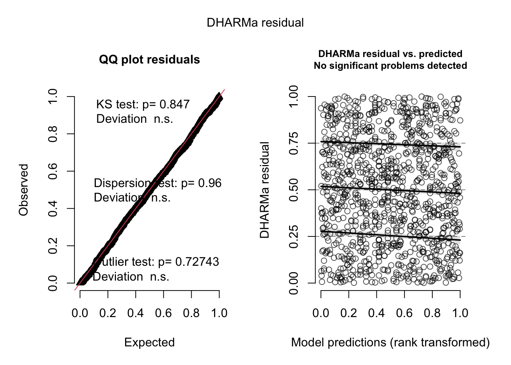
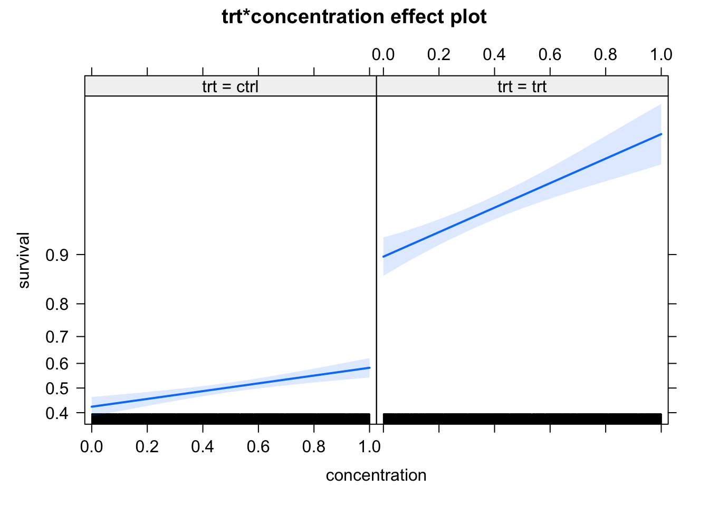

?family8 GL(M)Ms
8.1 Introduction to GLMs
Generalized linear models (GLMs) extend the linear model (LM) to other (i.e. non-normal) distributions. The idea is the following:
We want to keep the regression formula \(y \sim f(x)\) of the lm with all it’s syntax, inlcuding splines, random effects and all that. In the GLM world, this is called the “linear predictor”.
However, in the GLM, we now allow other residual distributions than normal, e.g. binomial, Poisson, Gamma, etc.
Some families require a particular range of the predictions (e.g. binomial requires predictions between zero and one). To achieve this, we use a so-called link function to bring the results of the linear predictor to the desired range.
In R, the distribution is specified via the family() function, which distinguishes the glm from the lm function. If you look at the help of family, you will see that the link function is an argument of family(). If no link is provided, the default link for the respective family is chosen.
A full GLM structure is thus:
\[ y \sim family[link^{-1}(f(x) + RE)] \]
Note
As you see, in noted the link function as \(link^{-1}\) in this equation. The reason is that traditionally, the link function is applied to the left hand side of the equation, i.e.
\[ link(y) \sim x \]
This is important to keep in mind when interpreting the names of the link function - the log link, for example, means that \(log(y) = x\), which actually means that we assume \(y = exp(x)\), i.e. the result of the linear predictor enters the exponential function, which assures that we have strictly positive predictions.
The function \(f(x)\) itself can have all components that we discussed before, in particular
You can add random effects as before (using functions
lme4::glmerorglmmTMB::glmmTMB)You can also use splines using
mgcv::gam
8.2 Important GLM variants
The most important are
- Bernoulli / Binomial family = logistic regression with logit link
- Poisson family = Poisson regression with log link
- Beta regresion for continous 0/1 data
Of course, there are many additional distributions that you could consider for your response. Here an overview of the common choices:

Screenshot taken from Wikipedia: https://en.wikipedia.org/wiki/Generalized_linear_model#Link_function. Content licensed under the Creative Commons Attribution-ShareAlike License 3.0.
8.2.1 Count data - Poisson regression
The standard model for count data (1,2,3) is the Poisson regression, which implements
A log-link function -> \(y = exp(ax + b)\)
A Poisson distribution
As an example, we use the data set birdfeeding from the EcoData package - the dataset consists of observations of foods given to nestlings to parents as a function of the attractiveness of the nestling.
library(EcoData)
#str(birdfeeding)
plot(feeding ~ attractiveness, data = birdfeeding)
To fit a Poisson regression to this data, we use the glm() function, specifying family = "poisson". Note again that the log link function is the default (see ?family), so it does not have to be specified.
fit = glm(feeding ~ attractiveness, data = birdfeeding, family = "poisson")
summary(fit)
Call:
glm(formula = feeding ~ attractiveness, family = "poisson", data = birdfeeding)
Deviance Residuals:
Min 1Q Median 3Q Max
-1.55377 -0.72834 0.03699 0.59093 1.54584
Coefficients:
Estimate Std. Error z value Pr(>|z|)
(Intercept) 1.47459 0.19443 7.584 3.34e-14 ***
attractiveness 0.14794 0.05437 2.721 0.00651 **
---
Signif. codes: 0 '***' 0.001 '**' 0.01 '*' 0.05 '.' 0.1 ' ' 1
(Dispersion parameter for poisson family taken to be 1)
Null deviance: 25.829 on 24 degrees of freedom
Residual deviance: 18.320 on 23 degrees of freedom
AIC: 115.42
Number of Fisher Scoring iterations: 4The output is very similar to the lm(), however, as the residuals are not any more assumed to scatter normally, all statistics based on R2 have been replaced by the deviance (deviance = - 2 logL(saturated) - logL(fitted)). So, we have
Deviance residuals on top
Instead of R2, we get null vs. residual deviance, and AIC. Based on the deviance, we can calculate a pseudo R2, e.g. McFadden, which is 1-[LogL(M)/LogL(M0))]
Note
As already mentioned, the deviance is a generalization of the sum of squares and plays, for example, a similar role as the residual sum of squares in ANOVA.
The deviance of our model M1 is defined as \(Deviance_{M_1} = 2 \cdot (logL(M_{saturated}) - logL(M_1))\)
Example:
Deviance of M1
fit1 = glm(feeding ~ attractiveness, data = birdfeeding, family = "poisson")
summary(fit1)$deviance[1] 18.32001fitSat = glm(feeding ~ as.factor(1:nrow(birdfeeding)), data = birdfeeding, family = "poisson")
2*(logLik(fitSat) - logLik(fit1))'log Lik.' 18.32001 (df=25)Deviance of the null model (null model is for example needed to calculate the pseudo-R2 ):
summary(fit1)$null.deviance[1] 25.82928fitNull = glm(feeding ~ 1, data = birdfeeding, family = "poisson")
2*(logLik(fitSat) - logLik(fitNull))'log Lik.' 25.82928 (df=25)Calculation of Pseudo-R2 with deviance or logL
Common pseudo-R2 such as McFadden or Nagelkerke use the the logL instead of the deviance, whereas the pseudo-R2 by Cohen uses the deviance. However, R2 calculated based on deviance or logL differs considerably, as the former is calculated in reference to the maximal achievable fit (saturated model) while the latter just compares the improvement of fit compared to the null model:
# Based on logL
McFadden = 1-(logLik(fit1))/(logLik(fitNull))
print(McFadden)'log Lik.' 0.06314239 (df=2)# Based on deviance
Cohen = 1- (logLik(fitSat) - logLik(fit1)) / (logLik(fitSat) - logLik(fitNull))
print(Cohen)'log Lik.' 0.2907272 (df=25)Note: Unfortunately, there is some confusion about the exact definition, as deviance is sometimes defined (especially outside of the context of GL(M)Ms) simply as \(Deviance = -2LogL(M_1)\)
If we want to calculate model predictions, we have to transform to the response scale. Here we have a log link, i.e. we have to transform with exp(linear response).
exp(1.47459 + 3 * 0.14794)[1] 6.810122Alternatively (and preferably), you can use the predict() function with type = "response"
dat = data.frame(attractiveness = 3)
predict(fit, newdata = dat) # linear predictor 1
1.918397 predict(fit, newdata = dat, type = "response") # response scale 1
6.810034 Effect plots work as before. Note that the effects package always transforms the y axis according to the link, so we have log scaling on the y axis, and the effect lines remain straight
library(effects)
plot(allEffects(fit))
8.2.1.1 Notes on the Poisson regression
Poisson vs. log transformed count data: For count data, even if the distribution is switched, the log link is nearly always the appropriate link function. Before GLMs were widely available, was common to it lm with log transformed counts, which is basically log link + normal distribution
Log offset: If there is a variable that that controls the number of counts (e.g. time, area), this variable is usually added as a offset in the following form
fit = glm(y ~ x + offset(log(area)), family = "poisson")As the log-link connects the linear predictor as in \(y = exp(x)\), and \(exp(x + log(area)) = exp(x) \cdot area\), this makes the expected counts proportional to area, or whatever variable is added as a log offset.
Interactions: As for all GLMs with nonlinear link functions, interpretation of the interactions is more complicated. See notes on this below.
8.2.2 0/1 or k/n data - logistic regression
The standard model to fit binomial (0/1 or k/n) data is the logistic regression, which combines the binomial distribution with a logit link function. To get to know this model, let’s have a look at the titanic data set in EcoData:
library(EcoData)
#str(titanic)
#mosaicplot( ~ survived + sex + pclass, data = titanic)
titanic$pclass = as.factor(titanic$pclass)We want to analyze how survival in the titanic accident depended on other predictors. We could fit an lm, but the residual checks make it very evident that the data with a 0/1 response don’t fit to the assumption of an lm:
fit = lm(survived ~ sex * age, data = titanic)
summary(fit)
Call:
lm(formula = survived ~ sex * age, data = titanic)
Residuals:
Min 1Q Median 3Q Max
-0.8901 -0.2291 -0.1564 0.2612 0.9744
Coefficients:
Estimate Std. Error t value Pr(>|t|)
(Intercept) 0.637645 0.046165 13.812 < 2e-16 ***
sexmale -0.321308 0.059757 -5.377 9.35e-08 ***
age 0.004006 0.001435 2.792 0.00534 **
sexmale:age -0.007641 0.001823 -4.192 3.01e-05 ***
---
Signif. codes: 0 '***' 0.001 '**' 0.01 '*' 0.05 '.' 0.1 ' ' 1
Residual standard error: 0.4115 on 1042 degrees of freedom
(263 observations deleted due to missingness)
Multiple R-squared: 0.3017, Adjusted R-squared: 0.2997
F-statistic: 150 on 3 and 1042 DF, p-value: < 2.2e-16par(mfrow = c(2, 2))
plot(fit)
Thus, let’s move to the logistic regression, which assumes a 0/1 response + logit link. In principle, this is distribution is called Bernoulli, but in R both 0/1 and k/n are called “binomial”, as Bernoulli is the special case of binomial where n = 1.
m1 = glm(survived ~ sex*age, family = "binomial", data = titanic)
summary(m1)
Call:
glm(formula = survived ~ sex * age, family = "binomial", data = titanic)
Deviance Residuals:
Min 1Q Median 3Q Max
-2.0247 -0.7158 -0.5776 0.7707 2.2960
Coefficients:
Estimate Std. Error z value Pr(>|z|)
(Intercept) 0.493381 0.254188 1.941 0.052257 .
sexmale -1.154139 0.339337 -3.401 0.000671 ***
age 0.022516 0.008535 2.638 0.008342 **
sexmale:age -0.046276 0.011216 -4.126 3.69e-05 ***
---
Signif. codes: 0 '***' 0.001 '**' 0.01 '*' 0.05 '.' 0.1 ' ' 1
(Dispersion parameter for binomial family taken to be 1)
Null deviance: 1414.6 on 1045 degrees of freedom
Residual deviance: 1083.4 on 1042 degrees of freedom
(263 observations deleted due to missingness)
AIC: 1091.4
Number of Fisher Scoring iterations: 4
Note
The syntax here is for 0/1 data. If you have k/n data, you can either specify the response as cbind(k, n-k), or you can fit the glm with k ~ x, weights = n
The interpretation of the regression table remains unchanged. To transform to predictions, we have to use the inverse logit, which is in R:
plogis(0.493381 + 0.022516 * 20) # Women, age 20.[1] 0.7198466plogis(0.493381 -1.154139 + 20*(0.022516-0.046276)) # Men, age 20[1] 0.2430632Alternatively, we can again use the predict function
newDat = data.frame(sex = as.factor(c("female", "male")), age = c(20,20))
predict(m1, newdata = newDat) # Linear predictor. 1 2
0.9436919 -1.1359580 predict(m1, newdata = newDat, type = "response") # Response scale. 1 2
0.7198448 0.2430633 Finally, the effect plots - note again the scaling of the y axis, which is now logit.
library(effects)
plot(allEffects(m1))
If you do an ANOVA on a glm, you should take care that you perform a Chisq and not an F-test. You notice that you have the right one if the ANOVA doesn’t supply SumSq statistics, but deviance. In the anova function, we have to set this by hand
anova(m1, test = "Chisq")Analysis of Deviance Table
Model: binomial, link: logit
Response: survived
Terms added sequentially (first to last)
Df Deviance Resid. Df Resid. Dev Pr(>Chi)
NULL 1045 1414.6
sex 1 312.612 1044 1102.0 < 2.2e-16 ***
age 1 0.669 1043 1101.3 0.4133
sex:age 1 17.903 1042 1083.4 2.324e-05 ***
---
Signif. codes: 0 '***' 0.001 '**' 0.01 '*' 0.05 '.' 0.1 ' ' 1note that anova works for glm and glmmTMB, but not for lme4::glmer.
The function car::Anova works for all models and uses a ChiSq test automatically. Given that you probably want to use a type II or III Anova anyway, you should prefer it.
car::Anova(m1)Analysis of Deviance Table (Type II tests)
Response: survived
LR Chisq Df Pr(>Chisq)
sex 310.044 1 < 2.2e-16 ***
age 0.669 1 0.4133
sex:age 17.903 1 2.324e-05 ***
---
Signif. codes: 0 '***' 0.001 '**' 0.01 '*' 0.05 '.' 0.1 ' ' 1Of course, when using this with random effects, the caveats that we discussed when introducing random effects apply: this function does not account for changes in the degrees of freedom created by changing the fixed effect structure. Something like the lmerTest package which uses a df approximation does not exist for GLMMs. Thus, the values that you obtain here are calculated under the assumption that the RE structure is the same.
If you see large changes in your RE structure, or if you want to select on the REs, you can move to a simulated LRT.
8.2.2.1 Notes on the logistic regression
Offset: there is no exact solution for making 0/1 data dependent on a scaling factor via an offset, which is often desirable, for example in the context of survival analysis with different exposure times. An approximate solution is to use an offset together with the log-log link (instead of logit).
Interactions: As for all GLMs with nonlinear link functions, interpretation of the interactions is more complicated. See notes in this below.
Overdispersion: 0/1 poisson responses cannot be overdispersed, but k/n responses can be. However, 0/1 responses can show overdispersion if grouped to k/n. Note next section on residual checks, as well as comments on testing binomial GLMs in the
DHARMa vignette.
8.3 Residual and their solutions in GLMs
First of all: everything we said about model selection and residual checks for LMs also apply for GLMs, with only very few additions, so you should check your model in principle as before. However, there are a few tweaks you have to be aware of.
Let’s look again at the titanic example
m1 = glm(survived ~ sex*age, family = "binomial", data = titanic)How can we check the residuals of this model? Due to an unfortunate programming choice in R (Nerds: Check class(m1)), the standard residual plots still work
par(mfrow = c(2, 2))
plot(m1)
but they look horrible, because they still check for normality of the residuals, while we are interested in the question of whether the residuals are binomially distributed.
8.3.1 DHARMA residual plots for GL(M)Ms
The DHARMa package that we already introduced solves this problem
library(DHARMa)This is DHARMa 0.4.6. For overview type '?DHARMa'. For recent changes, type news(package = 'DHARMa')res = simulateResiduals(m1)Standard plot:
plot(res)
Out of the help page: The function creates a plot with two panels. The left panel is a uniform Q-Q plot (calling plotQQunif), and the right panel shows residuals against predicted values (calling plotResiduals), with outliers highlighted in red.
Very briefly, we would expect that a correctly specified model shows:
A straight 1-1 line, as well as not significant of the displayed tests in the Q-Q-plot (left) -> Evidence for a correct overall residual distribution (for more details on the interpretation of this plot, see help).
Visual homogeneity of residuals in both vertical and horizontal direction, as well as no significance of quantile tests in the Residual vs. predicted plot (for more details on the interpretation of this plot, see help).
Deviations from these expectations can be interpreted similarly to a linear regression. See the vignette for detailed examples.
With that in mind, we can say that there is nothing special to see here. Also residuals against predictors shows no particular problem:
par(mfrow = c(1, 2))
plotResiduals(m1, form = model.frame(m1)$age)
plotResiduals(m1, form = model.frame(m1)$sex)
However, residuals against the missing predictor pclass show a clear problem:
dataUsed = as.numeric(rownames(model.frame(m1)))
plotResiduals(m1, form = titanic$pclass[dataUsed])
Thus, I should add passenger class to the model
m2 = glm(survived ~ sex*age + pclass, family = "binomial", data = titanic)
summary(m2)
Call:
glm(formula = survived ~ sex * age + pclass, family = "binomial",
data = titanic)
Deviance Residuals:
Min 1Q Median 3Q Max
-2.3844 -0.6721 -0.4063 0.7041 2.5440
Coefficients:
Estimate Std. Error z value Pr(>|z|)
(Intercept) 2.790839 0.362822 7.692 1.45e-14 ***
sexmale -1.029755 0.358593 -2.872 0.00408 **
age -0.004084 0.009461 -0.432 0.66598
pclass2 -1.424582 0.241513 -5.899 3.67e-09 ***
pclass3 -2.388178 0.236380 -10.103 < 2e-16 ***
sexmale:age -0.052891 0.012025 -4.398 1.09e-05 ***
---
Signif. codes: 0 '***' 0.001 '**' 0.01 '*' 0.05 '.' 0.1 ' ' 1
(Dispersion parameter for binomial family taken to be 1)
Null deviance: 1414.62 on 1045 degrees of freedom
Residual deviance: 961.92 on 1040 degrees of freedom
(263 observations deleted due to missingness)
AIC: 973.92
Number of Fisher Scoring iterations: 5plotResiduals(m2, form = model.frame(m2)$pclass)Now, residuals look fine. Of course, if your model gets more complicated, you may want to do additional checks, for example for the distribution of random effects etc.
8.3.2 Dispersion Problems in GLMs
One thing that is different between GLMs and LM is that GLMs can display overall dispersion problems. The most common GLMs to show overdispersion are the Poisson and the logistic regression.
The reason is that simple GLM distributions such as the Poisson or the Binomial (for k/n data) do not have a parameter for adjusting the spread of the observed data around the regression line (dispersion), but their variance is a fixed as function of the mean.
There are good reasons for why this is the case (Poisson and Binomial describe particular processes, e.g. coin flip, for which the variance is a fixed function of the mean), but the fact is that when applying these GLMs on real data, we often find overdispersion (more dispersion than expected), and more rarely, underdispersion (less dispersion than expected).
To remove the assumptions of a fixed dispersion, there are three options, of which you should definitely take the third one:
- Quasi-distributions, which are available in glm. Those add a term to the likelihood that corrects the p-values for the dispersion, but they are not distributions .-> Can’t check residuals, no AIC. -> Discouraged.
- Observation-level random effect (OLRE) - Add a separate random effect per observation. This effectively creates a normal random variate at the level of the linear predictor, increases variance on the responses.
- A GLM distribution with variable dispersion, for Poisson usually the negative binomial.
The reason why we should prefer the 3rd option is that it allows better residual checks and to model the dispersion as a function of the predictors, see next section.
Note
Overdispersion is often created by model misfit. Thus, before moving to a variable dispersion GLM, you should check for / correct model misfit.
8.3.2.1 Recognizing overdispersion
To understand how to recognize overdispersion, let’s look at an example. We’ll use the Salamanders dataset from the package glmmTMB, staring with a simple Poisson glm:
library(glmmTMB)Warning in checkDepPackageVersion(dep_pkg = "TMB"): Package version inconsistency detected.
glmmTMB was built with TMB version 1.9.3
Current TMB version is 1.9.1
Please re-install glmmTMB from source or restore original 'TMB' package (see '?reinstalling' for more information)library(lme4)Loading required package: Matrixlibrary(DHARMa)
m1 = glm(count ~ spp + mined, family = poisson, data = Salamanders)Overdispersion will be automatically highlighted in the standard DHARMa plots
res = simulateResiduals(m1, plot = T)DHARMa:testOutliers with type = binomial may have inflated Type I error rates for integer-valued distributions. To get a more exact result, it is recommended to re-run testOutliers with type = 'bootstrap'. See ?testOutliers for detailsYou see the dispersion problem by:
Dispersion test in the left plot significant
QQ plot S-shaped
Quantile lines in the right plots outside their expected quantiles
You can get a more detailed output with the testDispersion function, which also displays the direction of the dispersion problem (over or underdispersion)
testDispersion(res)
DHARMa nonparametric dispersion test via sd of residuals fitted vs.
simulated
data: simulationOutput
dispersion = 3.9152, p-value < 2.2e-16
alternative hypothesis: two.sidedOK, often the dispersion problem is caused by structural problems. Let’s add a random effect for site, which makes sense. We can do so using the function lme4::glmer, which adds the same extensions to glm as lmer adds to lm. This means we can use the usual random effect syntax we have used before.
m2 = glmer(count ~ spp + mined + (1|site),
family = poisson, data = Salamanders)The standard dispersion test is OK
res = simulateResiduals(m2, plot = T)DHARMa:testOutliers with type = binomial may have inflated Type I error rates for integer-valued distributions. To get a more exact result, it is recommended to re-run testOutliers with type = 'bootstrap'. See ?testOutliers for details
But when random effects are added, you should prefer to calcualte conditional residuals, because this test is more powerful. For lme4 models, we can switch via re.form = T
res = simulateResiduals(m2, plot = T, re.form = NULL)DHARMa:testOutliers with type = binomial may have inflated Type I error rates for integer-valued distributions. To get a more exact result, it is recommended to re-run testOutliers with type = 'bootstrap'. See ?testOutliers for details
This test shows that there is still some overdispersion. Actually, what the plots also show is heteroskedasticity, and we should probably deal with that as well, but we will only learn how in the next chapter. For now, let’s switch to a negative binomial model. This could be fit with lme4, but it is more convenient to use the package glmmTMB, which has the same syntax as lme4, but more advanced options.
m4 = glmmTMB(count ~ spp + mined + (1|site), family = nbinom2, data = Salamanders)
res = simulateResiduals(m4, plot = T)Unfortunately, glmmTMB doesn’t allow to calculate conditional residuals, so we have to be satisfied with the fact that the unconditional residuals look great.
8.3.3 Zero-inflation
Another common problem in count data (Poisson / negative binomial), but also other GLMs (e.g. binomial, beta) is that the observed data has more zeros than expected by the fitted distribution. For the beta, 1-inflation, and for the k/n binomial, n-inflation is also common, and tested for / addressed in the same way.
To deal with this zero-inflation, one usually adds an additional model component that controls how many zeros are produced. The default way to do this is assuming two separate processes which act after one another:
- First, we have the normal GLM, predicting what values we would expect
- On top of that, we have a logistic regression, which decides whether the GLM prediction or a zero should be observed
Note that the result of 1 can also be zero, so there are two explanations for a zero in the data. Zero-inflated GLMMs can, for example, be fit with glmmTMB, using the ziformula argument.
8.3.3.1 Recognizing zero-inflation
Danger
The fact that you have a lot of zeros in your data does not indicate zero-inflation. Zero-inflation is with respect to the fitted model. You can only check for zero-inflation after fitting a model.
Let’s look at our last model - DHARMa has a special function to check for zero-inflation
testZeroInflation(res)
DHARMa zero-inflation test via comparison to expected zeros with
simulation under H0 = fitted model
data: simulationOutput
ratioObsSim = 1.0172, p-value = 0.744
alternative hypothesis: two.sidedThis shows no sign of zero-inflation. There are, however, two problems with this test:
- glmmTMB models only allow unconditional residuals, which means that dispersion and zero-inflation tests are less powerfull
- When there is really zero-inflation, variable dispersion models such as the negative Binomial often simply increase the dispersion to account for the zeros, leading to no apparent zero-inflation in the residuals, but rather underdispersion.
Thus, for zero-inflation, model selection, or simply fitting a ZIP model is often more reliable than residual checks. You can compare a zero-inflation model via AIC or likelihood ratio test to your base model, or simply check if the ZIP term in glmmTMB is significant.
m5 = glmmTMB(count ~ spp + mined + (1|site), family = nbinom2, ziformula = ~1, data = Salamanders)
summary(m5) Family: nbinom2 ( log )
Formula: count ~ spp + mined + (1 | site)
Zero inflation: ~1
Data: Salamanders
AIC BIC logLik deviance df.resid
1674.4 1723.5 -826.2 1652.4 633
Random effects:
Conditional model:
Groups Name Variance Std.Dev.
site (Intercept) 0.2944 0.5426
Number of obs: 644, groups: site, 23
Dispersion parameter for nbinom2 family (): 0.942
Conditional model:
Estimate Std. Error z value Pr(>|z|)
(Intercept) -1.6832 0.2742 -6.140 8.28e-10 ***
sppPR -1.3197 0.2875 -4.591 4.42e-06 ***
sppDM 0.3686 0.2235 1.649 0.099047 .
sppEC-A -0.7098 0.2530 -2.806 0.005016 **
sppEC-L 0.5714 0.2191 2.608 0.009105 **
sppDES-L 0.7929 0.2166 3.660 0.000252 ***
sppDF 0.3120 0.2329 1.340 0.180329
minedno 2.2633 0.2838 7.975 1.53e-15 ***
---
Signif. codes: 0 '***' 0.001 '**' 0.01 '*' 0.05 '.' 0.1 ' ' 1
Zero-inflation model:
Estimate Std. Error z value Pr(>|z|)
(Intercept) -16.41 4039.11 -0.004 0.997In this case, we have no evidence for zero-inflation. To see an example where you can find zero-inflation, do the Owl case study below.
8.4 Interpreting interactions in GLMs
A significant problem with interpreting GLMs is the interpretation of slopes in the presence of other variables, in particular interactions. To understand this problem, let’s first confirm to ourselves: if we simulate data under the model assumptions, parameters will be recovered as expected.
library(effects)
set.seed(123)
trt = as.factor(sample(c("ctrl", "trt"), 5000, replace= T))
concentration = runif(5000)
response = plogis(0 + 1 * (as.numeric(trt) - 1) + 1*concentration)
survival = rbinom(5000, 1, prob = response)
dat = data.frame(trt = trt,
concentration = concentration,
survival = survival)
m1 = glm(survival ~ trt * concentration, data = dat, family = "binomial")
summary(m1)
Call:
glm(formula = survival ~ trt * concentration, family = "binomial",
data = dat)
Deviance Residuals:
Min 1Q Median 3Q Max
-2.0767 -1.2595 0.6357 0.8578 1.1457
Coefficients:
Estimate Std. Error z value Pr(>|z|)
(Intercept) 0.07491 0.08240 0.909 0.363
trttrt 0.93393 0.12731 7.336 2.20e-13 ***
concentration 0.89385 0.14728 6.069 1.29e-09 ***
trttrt:concentration 0.13378 0.23675 0.565 0.572
---
Signif. codes: 0 '***' 0.001 '**' 0.01 '*' 0.05 '.' 0.1 ' ' 1
(Dispersion parameter for binomial family taken to be 1)
Null deviance: 5920.1 on 4999 degrees of freedom
Residual deviance: 5622.9 on 4996 degrees of freedom
AIC: 5630.9
Number of Fisher Scoring iterations: 4plot(allEffects(m1))
The problem with this, however, is the condition that we “simulate data under model assumptions”, which includes the nonlinear link function. Let’s have a look what happens if we simulate data differently: in this case, we just assume that treatment changes the overall probability of survival (from 45% to 90%), and the concentration increases the survival by up to 10% for each group. We may think that we don’t have an interaction in this case, but the model finds one
response = 0.45 * as.numeric(trt) + 0.1*concentration
survival = rbinom(5000, 1, response)
dat = data.frame(trt = trt,
concentration = concentration,
survival = survival)
m2 = glm(survival ~ trt * concentration,
data = dat, family = "binomial")
summary(m2)
Call:
glm(formula = survival ~ trt * concentration, family = "binomial",
data = dat)
Deviance Residuals:
Min 1Q Median 3Q Max
-2.8600 -1.0714 0.2821 1.0405 1.3101
Coefficients:
Estimate Std. Error z value Pr(>|z|)
(Intercept) -0.30719 0.08142 -3.773 0.000161 ***
trttrt 2.46941 0.18030 13.696 < 2e-16 ***
concentration 0.64074 0.14149 4.529 5.94e-06 ***
trttrt:concentration 1.37625 0.39167 3.514 0.000442 ***
---
Signif. codes: 0 '***' 0.001 '**' 0.01 '*' 0.05 '.' 0.1 ' ' 1
(Dispersion parameter for binomial family taken to be 1)
Null deviance: 5848.4 on 4999 degrees of freedom
Residual deviance: 4355.1 on 4996 degrees of freedom
AIC: 4363.1
Number of Fisher Scoring iterations: 6plot(allEffects(m2))
It looks in the effect plots as if the slope is changing as well, but note that this because the effect plots scale the y axis according to the link - absolutely, the effect of concentration is 10% for both groups.
The reason is simple: if we plot the plogis function, it becomes obvious that at different base levels (which would be controlled by trt in our case), moving a unit in concentration has a different effect.
If we turn this around, this means that if want the model to have the same effect of concentration at the response scale for both treatments, we must implement an interaction.
Whether this is a feature or a bug of GLMs depends a bit on the viewpoint. One could argue that, looking at survival, for example, it doesn’t make sense that the concentration should have an effect of absolute 10% on top of the baseline created by trt for either 45% and 90% survival, and if we see such an effect, we should interpret this as an interaction, because relatively speaking, and increase of 45% to 55% is less important than an increase of 90% to 100%.
Still, this also means that main effects and interactions can change if you change the link function, and default links are not always natural from a biological viewpoint. So, for example, we could fit the last model with a binomial distribution, but with an identity link
m3 = glm(survival ~ trt * concentration,
data = dat, family = binomial(link = "identity"))Warning: step size truncated: out of bounds
Warning: step size truncated: out of bounds
Warning: step size truncated: out of bounds
Warning: step size truncated: out of bounds
Warning: step size truncated: out of bounds
Warning: step size truncated: out of bounds
Warning: step size truncated: out of bounds
Warning: step size truncated: out of bounds
Warning: step size truncated: out of bounds
Warning: step size truncated: out of bounds
Warning: step size truncated: out of boundsWarning: glm.fit: algorithm stopped at boundary valuesummary(m3)
Call:
glm(formula = survival ~ trt * concentration, family = binomial(link = "identity"),
data = dat)
Deviance Residuals:
Min 1Q Median 3Q Max
-3.2649 -1.0716 0.3023 1.0398 1.3103
Coefficients:
Estimate Std. Error z value Pr(>|z|)
(Intercept) 0.42369 0.02010 21.079 < 2e-16 ***
trttrt 0.48388 0.02174 22.254 < 2e-16 ***
concentration 0.15935 0.03483 4.575 4.77e-06 ***
trttrt:concentration -0.06690 0.03582 -1.868 0.0618 .
---
Signif. codes: 0 '***' 0.001 '**' 0.01 '*' 0.05 '.' 0.1 ' ' 1
(Dispersion parameter for binomial family taken to be 1)
Null deviance: 5848.4 on 4999 degrees of freedom
Residual deviance: 4347.2 on 4996 degrees of freedom
AIC: 4355.2
Number of Fisher Scoring iterations: 12plot(allEffects(m3))
To solve this problem, there are a number of glm-specific solutions, for example for the logistic regression to prefer the so-called odds ratios. Another option is to look at the predicted effects at the response scale, e.g. via the effect plots, and interpret from there if we have an interaction according to what you would define as one biologically.
Note
If effect directions change in sign, they will do so under any link function (as they are always monotonous), so changes in effect direction are robust to this problem.
8.5 New considerations for GLMMs
As we saw, in principle, random effects can be added to GLMs very much in the same way as before. Note, however, that there is a conceptual difference:
In an LMM, we had y = f(x) + RE + residual, where both RE and residual error were normal distributions
In a GLMM, we have y = dist <- link^-2 <- f(x) + RE, so the normally distributed RE goes into another distribution via the link function
This has a number of consequences that may be unexpected if you don’t think about it.
8.5.1 Unconditinal vs. marginal predictions
One of those is that, if you have a nonlinear link function, predictions based on the fixed effects (unconditional) will not correspond to the mean of your data, or the average of the model predictions including the random effect (marginal predictions). To understand this, imagine we have a logistic regression, and our fixed effects predict a mean of 1. Then the unconditional prediction at the response scale
plogis(1)[1] 0.7310586Now, let’s try to see what the average (marginal) prediction over all random effects is. We add a random effect with 20 groups, sd = 1. In this case, there will be additional variation around the random intercept.
mean(plogis(1 + rnorm(20, sd = 1)))[1] 0.6966425The value is considerably lower than the unconditional prediction, and this value is also what you would approximately get if you take the mean of your data.
Whether this is a problem or not is a matter of perspective. From statistical viewpoint, assuming that your model assumptions correspond to the data-generating model, there is nothing wrong with the unconditional (fixed effect) prediction not corresponding to the mean of the data. From a practical side, however, many people are unsatisfied with this, because they want to show predictions against data. Unfortunately (to my knowledge), there is no function to automatically create marginal predictions. A quick fix would be to create conditional predictions, add random effecots on top as above (with the estimated variances) and push them through the corresponding link function.